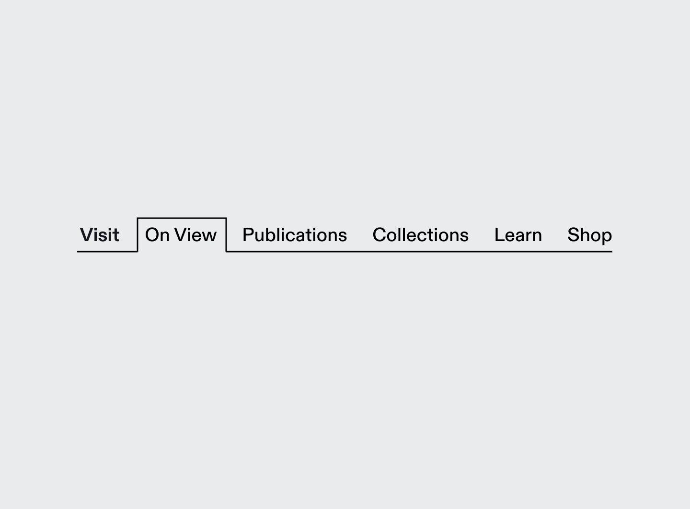
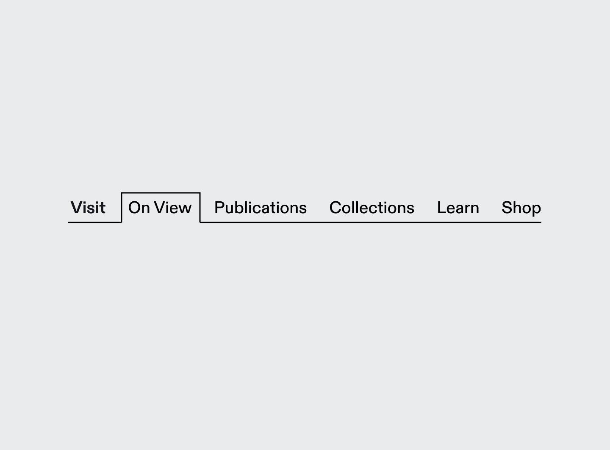

RISD Museum Rebrand
The stair logo presents the museum’s strengths as a “hidden gem,” emphasizing the idea of journeying through the museum and discovering new things. The stair also acts as a symbol for making connections and bridging gaps between the local Providence community and the RISD campus.
Advised by Anther Kiley
For Design Studio 4


 
